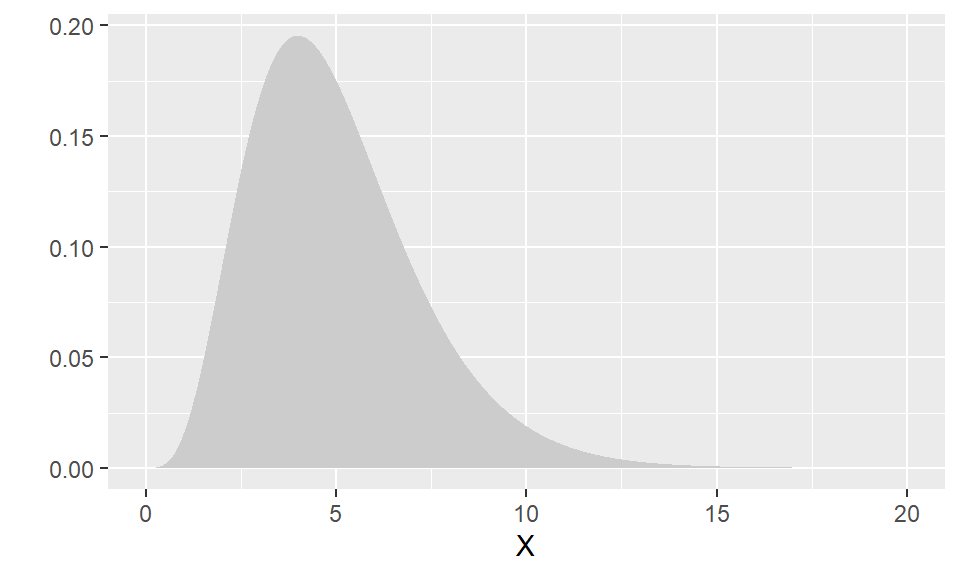
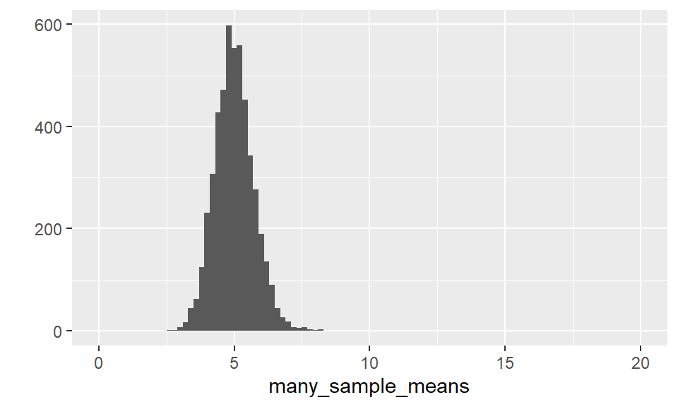

Introduction
In this lab you’ll use simulation to explore sampling distributions. Recall that the sampling distribution represents the distribution of a statistic based on all possible samples of a fixed size from a certain population.
In this lab we’ll choose a specific population distribution, use the sample mean as our statistic, and investigate the sampling distribution for a few different sample sizes. In homework you’ll get to do the same exploration for a different population distribution.
For this lab you’ll assume the population has a Gamma distribution with a shape parameter set to 5, and a rate parameter set to 1, often abbreviated to Gamma(5, 1). This distribution is shown below: 
Sampling from the population
The function rgamma() draws samples from a Gamma distribution. The first argument n determines the sample size, the next arguments, shape and rate correspond to the parameters. So, for example to generate a sample of size 10 from our population we could run: rgamma(n = 10, shape = 5, rate = 1).
# Generate 10 Gamma(5, 1) random variablesrgamma(n = 10, shape = 5, rate = 1)So there they are, but the list is not particularly insightful. Let’s generate 1000, and look at a histogram to make sure they are actually coming from the same distribution as the distribution you saw earlier.
Run this code to generate a larger sample from the population and make a histogram of itone_large_sample <- rgamma(n = 1000, shape = 5, rate = 1) # Generate a sample of size 1000 from Gamma(5, 1)
qplot(one_large_sample)How does it compare to the population? 
Looks pretty similar! This is an example of a single sample of size 1000 from the population. Since, \(n = 1000\) is pretty large, we expect the histogram of this large sample to be a good estimate of the population distribution.
One way to use a large sample from a population, is to use it to estimate the expected value of a draw from the population (a.k.a population mean, or true mean). We simply use the sample mean of our large sample:
one_large_sample <- rgamma(n = 1000, shape = 5, rate = 1)
mean(one_large_sample)## [1] 5.059611It’s not exactly five, because it’s just an estimate based on 1000 simulated draws. To get a better estimate you could increase the sample size.
Homework hint: this could be called “using simulation to estimate the expected value”.
Sampling Distributions
So far you’ve just looked at the distribution of a sample. Now, you’ll estimate a sampling distribution for the sample mean with samples of size \(n = 10\). In practice this means we need to repeat many times:
- Take a sample of size \(n = 10\) from the Gamma(5, 1) population
- Record the mean of the sample from step 1.
A histogram of the sample means from step 2. will be our estimate of the sampling distribution for the sample mean with samples of size \(n = 10\).
Let’s see how that looks in code. First, we draw a sample of size ten from a Gamma(5,1), and store it in first_sample:
first_sample <- rgamma(n = 10, shape = 5, rate = 1)Then we find the mean of this sample:
mean(first_sample)## [1] 3.857753Remember that the sample mean is an estimate of the expectation (a.k.a true mean) of a Gamma(5, 1), which is five.
Make sense? Let’s cut down on the typing a bit, by combining these steps into one line of code.
Perform the above actions in one line of code, by using thergamma() call as the argument to mean().
mean(rgamma(n = 10, shape = 5, rate = 1))Remember, you will get a different value each time you run the code, because the function is randomly generating Gamma random variables each time it is called, before taking the mean. The sampling distribution describes the distribution of these values. To estimate this sampling distribution we need to repeat these steps many times and take a look at a histogram of them.
Let’s repeat (think replicate()) these steps 5,000 times:
many_sample_means <- replicate(5000,
mean(rgamma(n = 10, shape = 5, rate = 1)))
qplot(many_sample_means, binwidth = 0.2,
xlim = c(0, 20)) 
The additional argument xlim to qplot() sets the limits of the x-axis. I’m setting them to 0 to 20 to keep all our plots on the same scale as the population.
This histogram is the result of 5,000 replications of taking the mean of samples of size ten. It is our estimate of what the “sampling distribution of the sample mean for samples of size 10 from a Gamma(5, 1) population” looks like.
The histogram is centered over five, so on average the mean of a size ten sample gives us the true population mean. But quite often the estimate will be above six, or below four. That is a pretty big miss. If we want more confidence in our estimate, we would have to take larger samples.
Compare the histogram to the population distribution:
popThe Central Limit Theorem
Now, let’s explore what happens when the sample size, \(n\), increases. As a reference here’s the histogram for the sampling distribution of the mean for samples of size 10 from the Gamma(5, 1) population from the previous section:
qplot(many_sample_means, binwidth = 0.2,
xlim = c(0, 20)) many_sample_means <- replicate(5000,
mean(rgamma(n = 10, shape = 5, rate = 1)))
qplot(many_sample_means, binwidth = .05,
xlim = c(0, 20)) many_sample_means <- replicate(5000,
mean(rgamma(n = 50, shape = 5, rate = 1)))
qplot(many_sample_means, binwidth = .05,
xlim = c(0, 20)) The histogram should still be centered over five (the true population mean), but now the histogram is much narrower, meaning that the sample means are varying less. In other words, our estimate of the population mean is getting much better when our sample size increases.
Let’s try one more. Create a histogram of the sampling distribution for sample of size 100 from the Gamma(5,1) distribution.many_sample_means <- replicate(5000,
mean(rgamma(n = 100, shape = 5, rate = 1)))
qplot(many_sample_means, binwidth = .05,
xlim = c(0, 20)) Still centered over five, the true mean of a Gamma(5,1) distribution, but the histogram is even narrower! The variance of the sample mean is decreasing as the sample size increases. Not only that, the shape of the histogram is getting even more Normal. This is the Central Limit Theorem in action!
Remember the Central Limit Theorem says, for a population with mean \(\mu\) and standard deviation \(\sigma\), the sampling distribution of the sample mean for large enough \(n\) is approximately Normal(\(\mu\), \(\sigma^2/n\)). In our example with a Gamma(5, 1) population the population mean is 5 and the population variance is also 5.
Below, I’ve drawn the histogram for the sample mean from samples of size 100 from this Gamma(5, 1) population. The black line overlaid is a Normal distribution with mean and variance controlled by the values in corresponding the boxes.
Adjust the mean and variance values of the Normal distribution to those predicted by the Central Limit Theorem. You should get a close correspondence between the curve and histogram.
lab-3-submission.Rmd.